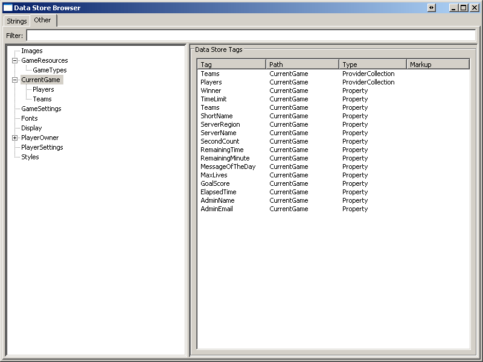
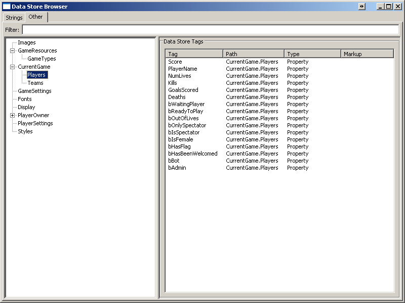
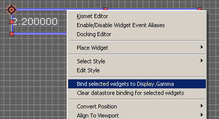
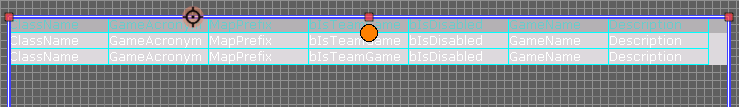
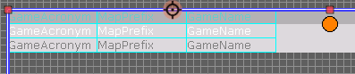

UDN
Search public documentation:
UIDataStore
日本語訳
中国翻译
한국어
Interested in the Unreal Engine?
Visit the Unreal Technology site.
Looking for jobs and company info?
Check out the Epic games site.
Questions about support via UDN?
Contact the UDN Staff
中国翻译
한국어
Interested in the Unreal Engine?
Visit the Unreal Technology site.
Looking for jobs and company info?
Check out the Epic games site.
Questions about support via UDN?
Contact the UDN Staff
UE3 Home > User Interfaces & HUDs > UI Data Store System
UI Data Store System
Overview
Terminology
- data store tag
- a name used to uniquely identify a registered data store instance. Usually the value of the data store's 'Tag' property, but can be overridden (for example, to return a name generated at runtime) by the UUIDataStore::GetDataStoreID() method.
- markup text (or data store markup)
- Data store markup text is how data store fields and providers are referenced by the UI or other systems, and looks similar to html tags. For markup syntax, see Markup Syntax.
- Virtual data store
- a data store that does not exist (i.e. is not registered with the data store client) but is recognized by the data store markup parsing code (for example, the Attributes data store).
Components
Data Store Client
The data store client is a singleton object which is responsible for registration and lifetime management of data stores, as well providing the UI and other systems with access to registered data stores. The data store client exists as long as the game is running.Setup and Initialization
The class used for creating the data store client is determined by the value of the Engine.DataStoreClientClassName property. By default, the data store client class used is Engine.DataStoreClient, but this can be changed by changing the value of the DataStoreClientClassName property in the[Engine.Engine] section of your game's DefaultEngine.ini; if the value of this property is invalid (is blank, doesn't correspond to a child class of DataStoreClient, etc.), the default data store client class will be used instead (Engine.DataStoreClient). The configured DataStoreClientClassName is loaded in UEngine::InitializeObjectReferences() (one of the few places where dynamically loading objects is compatible with seek-free loading) and the class reference is stored in the Engine.DataStoreClientClass property. The data store client is created during engine initialization by the UI controller (UIInteraction), in UUIInteraction::InitializeGlobalDataStores(). It is then added to the root-set (so that it is never garbage collected), then creates and initializes any global data stores (see next section) which have been registered with the data store client.
Operation
All initial interaction with data stores must go through the data store client. The data store client provides methods for creating data store instances, registering new data stores, searching for registered data stores by tag, and routing various notifications to registered data stores. The data store client maintains two lists of data stores - global data stores and player data stores.Global Data Stores
A data store is considered a global data store if the data it provides is not specific to a particular player. Static game resources such as map names and character biographies, remote data such as available internet game hosts, and dynamic data such as the current game's score limit are examples of the type of data that would be provided by a global data store. When the data store client is initialized (UDataStoreClient::InitializeDataStores()), a single instance of each global data store class listed in the GlobalDataStoreClasses array is created (see the data store registration section for instructions on registering global data stores), then registered with the data store client by calling RegisterDataStore(). Each global data store must have a unique data store tag in order to be registered successfully. Once registered successfully, global data stores (by default) remain in memory until the game exits. Global data stores can be accessed from any system by calling the data store client's FindDataStore() method, passing in the tag of the data store needed.
Player Data Stores
A data store is considered a player data store if the data it provides is specific to a particular player. Player-specific configuration data such as controller preferences and favorite weapons, remote data such as friends lists, and dynamic data such as current health are examples of the type of data that would be provided the a player data store. There are a couple of very important differences between player data stores and global data stores:- player data stores are created only when a new player is created - not during engine initialization
- player data stores do not persist for the life of the game; when a player is removed from the game (such as when the second player in a split-screen match signs out), all player data stores for that player are unregistered and subsequently garbage collected.
- a single instance of each player data store is created for each player; player data store tags must only be unique within the list of player data stores for a single player
- thus, each player has a data store with a given tag; for example, if you have registered a player data class that has a tag 'PlayerSettings' and there are 3 players in the game, there will be three data store instances which have the 'PlayerSettings' tag. This allows easy resolution of data store markup tags which correspond to a player data store without requiring the markup tag to contain information indicating which player's data stores to resolve from.
RegisterDataStore(). A new element is added to the PlayerDataStores array, which contains a reference to the newly created player and that player's player data stores. When the data store client receives a notification that a player has been removed, it iterates through its PlayerDataStores array searching for the element with a PlayerOwner matching the player being removed. Once it's found the PlayerDataStoreGroup for the removed player, it unregisters all of the player data stores for that player and removes the element from the PlayerDataStores array. PlayerDataStores can be accessed from any system by calling the data store client's FindDataStore() method, passing in a reference to the player and the tag of the data store needed.
Data Provider
A data provider (Engine.UIDataProvider) is the basic building block of the data store system. Data providers act as the gateway between the UI and the game, allowing the UI to publish and receive data without requiring the UI to know anything about where the data is actually coming from. Data providers expose data to other systems using data fields - a struct (UIDataProvider.UIDataProviderField) containing a tag which uniquely identifies some data which the data provider supports along with a value indicating what type of data field it is. Data field tags (UIDataProviderField.FieldTag) can be thought of as "aliases" for data that the data provider provides. Each data field tag maps to one of two things - a nested data provider (also arrays of nested data providers) or some real data value in the game. The data value types are specified by the FieldType (UIDataProviderField.FieldType) value. The types currently supported by the data store system include simple types, such as ints, bools or strings; range values, which are composed of a current value, min value and max value; arrays of data; and arrays of nested data providers (see the EUIDataProviderFieldType enum). The list of data field tags supported by a particular data provider is what determines which items appear in the UI editor's data store browser (which makes that data field tag available for binding by widgets). The data field tags are completely arbitrary and can be generated in any way that the data provider sees fit; in fact each data provider class will probably use a different method for generating the list of available data field tags. Some data providers may generate its list of tags using the names of a class's member properties (either the data provider's class or some other class in the game); others might use an array of names that is filled out by programmers in defaultproperties or the ini, while other data providers might hardcode its data field tags. How a data provider generates its list of supported tags is determined by how and where the data provider stores the data values that it exposes. The point is that while each data provider can generate this list of data field tags in any way that it wants to, every data provider must provide the UI with list of tags that the UI can use to reference the data handled by that provider. Data providers are capable of retrieving data values as well as modifying data values. The types of transactions allowed are determined by the data provider's WriteAccessType field. If this field's value is ACCESS_ReadOnly, the data provider will not be allowed to modify the data it exposes.Data Stores
Data stores are the top-level public interface for interacting with the data store system. Data stores allow other systems to interact with game data without needing to know what type the data is, and encapsulate references and lifetime management so that other systems can interact with the data freely without concern about holding object references, dangling pointers, un-initialized data, and other problems that can cause issues with garbage collection or increase memory usage. Data stores are capable of handling any type of data which can be rendered - strings, images, fundamental types (int, bool, float), arrays, structs, even certain objects...though the more complex types require custom handling by the data store designed to provide that data. Regardless of the types of data contained in a data store, the interface for binding, retrieving, and publishing the data is the same! While the purpose of a data provider is track data about a specific static resource or gameplay object instance, data stores are designed to primarily serve as collections of other data providers. Data stores are best used to provide a central location for a group of related data providers, and in this way they can be thought of much like folders in a directory tree. The data providers contained in a data store are accessed just as you would a normal data store field - using an arbitrary tag provided by the data store, formatted as a data store markup string. There are three types of data stores - persistent data stores, scene data stores, and pseudo-data stores. Persistent data stores are registered with the data store client and can be accessed by any widget in any scene in the UI (or any other system). Persistent data stores track information such as resource data (gametype or map descriptions), remote data (remote game host information), and state data such as game score and time limit. The global and player data stores classes mentioned in the Data Store Client section above are both considered to be persistent data stores. Temporary data stores are created by and associated with a specific UIScene, and can only be accessed by the widgets in that scene or child scenes. Temporary data stores track information such as the value that was entered into an editbox in the scene, or perhaps information about a pending connection. Pseudo data stores are data stores which do not really exist - that is, while the data store can be referenced by tag (via markup), there is no data store class which corresponds to that data store. At this time, there is only one pseudo data store - the Attributes data store, which provides the ability to apply inline modifications (such as bold, italic, etc.) to data being rendered in the UI.Data Subscribers / Publishers
A data subscriber is defined as any object which retrieves data from the data store system, while a publisher is any object which publishes data to the data store system. To be a data store subscriber, a class must implement the Engine.UIDataStoreSubscriber interface, which declares methods used for retrieving data from the data store system; likewise to be a data store publisher, a class must implement the Engine.UIDataStorePublisher interface class. Note that the UIDataStorePublisher interface is a child of the UIDataStoreSubscriber interface, so any class which implements the UIDataStorePublisher interface is automatically a data store subscriber, so must implement those methods as well. Data store subscribers define the number of data field subscriptions they support through data store bindings (UIDataStoreSubscriber.UIDataStoreBinding). This struct tracks various information about a single data field tag and encapsulates resolving a data store markup string into a data store reference (ResolveMarkup, Un/RegisterSubscriberCallback), as well as retrieving and publishing the value from the data store (GetBindingValue/SetBindingValue). Since a data store binding can be used for any data store field usually only one data store binding is needed, but it's possible to create as many as you like.
One of the methods declared by the UIDataStoreSubscriber interface is the RefreshSubscriberValue() method. When a data store binding is activated (by resolving the binding's markup string into a data store reference), the subscriber's RefreshSubscriberValue method is added to the resolved data store's list of subscriber callbacks so that the subscriber receives notifications when a data field's value has been modified. See Notifications for more information.
Markup Syntax
- Settings
- PreferredWeapon
- Controls
- Sensitivity[2]
- InvertY
<Settings:PreferredWeapon> To reference the InvertY data tag in the Controls data provider, your markup string would like this:
<Settings:Controls.InvertY>
. Because the InvertY data field tag is only supported by the Controls internal data provider, you can only access it through the Controls data provider. The markup string <Settings:InvertY>
wouldn't work, because the Settings data store only supports two data field tags - PreferredWeapon and Controls.To reference the first element of the Sensitivity array, your markup string would look like this:
<Settings:Controls.Sensitivity;0>
(Notice that markup array element indexes are zero-based, just like in code).
Note that once we are within the "scope" of an internal data provider, only the data field tags supported by that internal data provider are valid for the next node of the markup string. For example, the following markup string would not resolve successfully: <Settings:Controls.PreferredWeapon>
because once the "Controls" node is parsed, the next node will be resolved using the context of the Controls data provider.
Categories
Static (or resource) data stores
Static data stores are data stores which expose data that does not change while the game is running. Static data stores will typically not allow publishing updated values to their data fields, since the data represented is static in nature. The list of fields available in these types of data stores will generally not change. These data stores are usually the easiest to setup, since they usually do not require additional code to support lifetime management or association with instance of gameplay objects at runtime. These data stores expose data such as:- character information such as bios, max health, aggression, usable weapons, meshes, skins, etc.
- map data such as available maps, map names, max supported players, description, screenshot, etc.
- localized strings
- access to textures or materials
- Engine.UIDataStore_Strings (in the editor, this data store would be considered a variable data store since its supported fields can be modified in the editor)
- Engine.UIDataStore_GameResource
Dynamic (or state) data stores
Dynamic data store are data stores which expose data that changes during the game. Dynamic data stores may or may not allow publishing updated values to their data fields, depending on the purpose of the data store. The list of fields available in these types of data stores will generally not change. The majority of the data stores used in a game will typically be dynamic data stores, and the data providers used by these data stores are almost always associated with a specific instance of an object in the game. These data stores expose data such as:- game state, such as number of connected players, pickups available, time remaining, objectives remaining, etc.
- player status, such as current health, ammo, equipped weapons, current progression etc.
- remote session data, such as available online sessions, friends lists, connection information, session search results
- configurable settings data, such as player preferences, hosting preferences, etc.
- Engine.UIDataStore_OnlinePlayerData
- Engine.UIDataStore_OnlineStats
- Engine.UIDataStore_OnlineGameSearch
- Engine.UIDataStore_Settings and its child classes
- Engine.UIDataStore_GameState and its child classes
Variable data stores
Variable data stores are data stores which allow runtime modification of the list of fields available by the data store. These data stores always allow publishing updated values to their data fields, and are typically used for storing arbitrary data that must be shared e.g. between multiple scenes, as "scratchpads" for designers, or when the data fields exposed by a data store correspond to some non-constant collection of data (such as instances of a particular class). Examples of variable data stores:- Engine.UIDataStore_Fonts
- Engine.UIDataStore_Images
- Engine.SceneDataStore
Creating a data store
- Type of data - First you'll need to decide which type of data will be exposed by this data store. Is this data store intended to be used for exposing static data, dynamic data, or variable data?
- Components - Next, you'll need to decide how to separate the responsibilities of your data store. Will this data store provide direct access to data, will it be a composition of multiple data providers, or some combination of the two? How many data providers will this data store need? What are the responsibilities of these data providers? Will this data store expose data for a single resource, multiple instances of a single class type, multiple instances of multiple class types?
- Data field generation: Next is deciding how the list of data field tags will be generated. Which method makes the most sense for this data store - hardcoded list? data-driven? dynamically generated based on the nested data providers created?
- Storage: Next up is figuring out where the values for the data exposed by this data store will exist. Should the data store (or its providers) store the values itself, or will this data store simply represent data that already exists somewhere else, such as in a gameplay object's class.
- Presentation: Finally, decide how the list of data fields will be presented to the user (e.g. in the data store browser). If using nested data providers, should the data store simply provide tags which provide access to the nested data provider? Should the data store format the nested provider's data fields so that the data provider is transparent to the user?
- Class creation: First, create the data store and supporting classes.
- Registration: Next, you'll need to register the new data store with the data store client so that it is created at runtime
- Methods: Finally you'll need to implement the methods to make your data store work.
- Setting up a test scene: First, setup a test scene which you'll use to easily test that all methods in your data store are working correctly.
- Binding widgets: Next you'll setup bindings for the widgets in your test scene.
Design
todoStep #1: Type of Data
This step is pretty self-explanatory - what type of data will your data store expose? Determining the type of data exposed by your data store will help you decide how to structure your data store, which values may need to be set in the data store's defaultproperties block, and which methods need to be implemented. If your data store will contain collections, your data store class will need to implement the UIListElementProvider interface. For data stores which will present dynamic data, should subscribers be allowed to change the values of the data? If so, you'll need to make sure the value for the data store's WriteAccessType is set to something other than ACCESS_ReadOnly, as well as implementing theSetDataField family of methods. For data stores which will be presenting variable data, you'll need to use a UIDynamicFieldProvider (or your own child of this class) as the internal data provider for your data store, since this class already implements the functions necessary to support variable data store functionality.
Step #2: Components
Here's the heart of designing a data store class. Because the data store system is so open-ended, you have tons of options for how to structure your data store. On the upside, this means that you can represent any type of data flow anyway you like, but the lack of well-defined boundaries makes it difficult to decide where to start or which direction to go with. When designing a data store (or data provider), there are three basic structures you can go with:- Flat data store - the data store itself acts as its own data provider and has no intermediaries to deal with. In this structure, all data fields supported by the data store correspond to data. The data store is responsible for retrieving and publishing all data values.
- Advantages:
- Easier to write, review, and maintain. Data field generation, data value retrieval, and publishing all in one class makes the code much easier to follow and maintain.
- Efficiency - because all data fields are contained by the data store itself, the complete process of parsing a markup string into a data value can be much faster.
- Disadvantages:
- There is no way to re-use this data store's functionality in other data stores.
- In the UI editor's data store browser, the supported data fields will be presented as a flat list which can make browsing the data store's available data fields a bit unwieldy.
- Usage: This type of structure is best suited for data stores which present a very specific type of data, such as localized strings or direct access to images (i.e. using path names to reference the image).
- Advantages:
- Composite data store - the data store is merely a portal for accessing its nested data providers. In this structure, all data fields correspond to internal data providers and those data providers provide access to actual data. The data store is responsible for creating and managing the data providers and in some cases also handles some of the lifetime management (especially cleaning up at level change). The data store's providers may or may not have their own internal data providers.
- Advantages:
- Since all data retrieval and publishing is delegated to the individual data providers, the data store's code remains pretty simple.
- Allows a group of related data to be accessed through a single data store "umbrella".
- Very easy to separate responsibility of duties, promoting re-use of existing classes and reducing maintenance cost.
- In the UI editor's data store browser, data appears under categories making it easier to find a particular data field quickly.
- Disadvantages:
- Abstraction introduces additional levels of indirection, requiring more tracing through code to understand how the class works.
- Implementation is spread out across several classes, increasing likelihood of introducing bugs during maintenance.
- Requires more clicks to navigate to a particular data field in the UI editor's data store browser.
- Usage: This type of structure is best suited for data stores which provide access to a number of related groups of data - sort of like a "meta-datastore". This structure is preferred when the data store needs to provide access to data in multiple instances of a gameplay-related class (such as Engine.PlayerReplicationInfo). This is the more common data store structure.
- Advantages:
- Combination data store - the data store is a combination of the two other types. Some of its data fields represent actual data; others represent nested data providers.
- For obvious reasons, this structure has all of the advantages and disadvantages of the other two types, so I won't go into them again here.
- Usage: This structure is best suited for nested data providers which present data for arbitrary gameplay classes, where the gameplay class has a member variable of a type which supported some other data provider class (whew!). For example, the Engine.PlayerDataProvider class exposes the databinding properties of the Engine.PlayerReplicationInfo class. The Engine.TeamDataProvider class exposes the databinding properties of the Engine.TeamInfo class. PlayerReplicationInfo contains a TeamInfo variable which is not marked databinding. If however, we wanted the ability to access the data provider for the player's team through the data provider for the player, we could add the databinding keyword to the TeamInfo variable and the PlayerDataProvider would become a combination data provider rather than a flat data provider.
Step #3: Generating a list of data fields
Building the list of supported data fields usually ends up being one of the most confusing steps when creating your first couple of data stores. This is a little ironic because once you've "gotten over the hump" this becomes one of the easest steps in the process. I think the biggest contributing factor to initial confusion regarding this step is that it is by nature unbounded. In other words, the most accurate answer to the question "How do I generate the list of supported data fields?" is something along the lines of "However you want", which of course isn't very helpful to the person asking the question. Therefore, let's start with the basics and work our way up to the "however you want" answer - let's take a simple data store The method for retrieving the list of supported data fields from a data provider is theUUIDataProvider::GetSupportedDataFields() method. It takes a single parameter - a reference to an array of UIDataProviderFields, which the data provider is supposed to fill in with the list of data fields it supports. A UIDataProviderField is a struct comprised of a name and a type (there is another field - FieldProviders, but we'll ignore that for a second). For each data field that the data provider supports, it will add one element to the array containing the tag and type for that field. The data fields that are added to the array should only be the data fields which are supported by the data store itself, even if it contains internal data providers which have their own data fields. Let's look at a couple of really simple examples:
Let's say we want to create an extremely simple and specialized data store whose sole purpose is to provide direct read/write access to the current gamma setting. The actual gamma value used by the game is UClient::DisplayGamma, so our data store does not need to have any of its own properties. It will only support one data field, and we've decided to use "Gamma" as the tag for this data field. This data field does not represent a collection, nor does it correspond to an internal data provider - it represents a single data value, so the type for this data field should be DATATYPE_Property. So in our new data store's GetSupportedDataFields() method, we'll add a single element to the array which has the tag "Gamma" and a field type of DATATYPE_Property. Simple enough, right? Oh, and by the way, this data store actually already exists if you want to check out the code for yourself - Engine.UIDataStore_Gamma.
Let's look at another data store which uses a completely different method for building its list of supported data fields - the font data store (Engine.UIDataStore_Fonts). This data store is used by the string rendering code to allow using embedded markup to swap fonts in the middle of a string (see the TestFontScene in the TestUIScenes.upk package for an example). Since the only way to reliably reference UObjects is through path name, the data that this data store provides access to are the path names for all valid UFont objects that are in memory. Because the field's "value" is just a string, the type for this field will also be DATATYPE_Property. So in the UIDataStore_Fonts::GetSupportedDataFields() method, we add one data field for each font object in memory, with DATATYPE_Property as the data field type.
Finally, let's look at a more complex data store - the current game data store (Engine.CurrentGameDataStore). This data store has two collections of internal data providers which provide data for all PlayerReplicationInfo and TeamInfo objects in the game (because of the way the GameData field is handled, we'll ignore it for now but come back to later in the Presentation section below). The tags we've decided to use for accessing these two collections are "Players" and "Teams", respectively. Because these are collections of data providers, the type for both fields will be DATATYPE_ProviderCollection. So in the UCurrentGameDataStore::GetSupportedDataFields() method, we'll add two elements [not including the GameData field] to the output array; the first element's tag will be "Players" and the second element's tag will be "Teams". The data fields supported by those data providers will be added by their respective GetSupportedDataFields methods, so we don't worry about adding those here. However, we will need another piece of information here - remember the FieldProviders member which we ignored earlier? Well, when the data field type for a UIDataProviderField is set to DATATYPE_Provider or DATATYPE_ProviderCollection, the FieldProviders array must contain references to the data provider instances which are being represented by that data field. When the data type is DATATYPE_Provider (indicating a single data provider), the array would only contain one element.
If you look at the code in UCurrentGameDataStore::GetSupportedDataFields(), you'll notice something strange here - we have different logic depending on whether we're in the editor or not! This brings up a very good issue that you'll need to keep in mind when creating your own data stores. As mentioned above, when adding data fields which have a field type of DATATYPE_Provider or DATATYPE_ProviderCollection, the FieldProviders member for each data field we add must contain references to valid data provider instances of the correct type. Unfortunately, because of the way that the CurrentGameDataStore works, "player" and "team" data providers are only created when a PlayerReplicationInfo or TeamInfo actor is spawned in the game. Neither of these objects are spawned in the editor, so when we're working in the UI editor, we won't have any instances of these providers to put into that FieldProviders member. What do we do??? This problem is what the special code in UCurrentGameDataStore::GetSupportedDataFields() addresses. In the editor, we don't actually need any data from these internal data providers; we just need the list of data fields they support (or data schema) so that we can populate the data store browser's tree view. We use this to our advantage to satisfy the "DATATYPE_Provider/Collection must have a data provider instance" requirement by using the class default object for the corresponding data provider classes instead of a real instance! This allows the data browser code to query the data providers corresponding to the "Players" and "Teams" collections to get their supported data fields in the editor, without requiring us to create instances of these classes.
Note: Currently, UCurrentGameDataStore::GetSupportedDataFields() and UCurrentGameDataStore::GetFieldValue() do not handle the "Players" and "Teams" data fields during the game (i.e when GIsEditor == FALSE); this is just a bug in those functions so for the purpose of this example, we'll just overlook this.
Step #4: Storage
The next step is determining where the actual values for your data store's data fields will come from. This step is also very confusing when first getting acquainted with the data store system, because like the method for generating the list of supported fields, the location used to store and retrieve data store values is completely arbitrary, so could literally be anywhere. In Step #3, we examined the way that several existing data stores generated their list of supported data fields. As you probably noticed, the location of the data exposed by each data store was completely different. When creating your own data store, you have absolute freedom to store your data anywhere. However, there are a few guidelines you can follow when trying to determine whether to store the data yourself or simply reference data that exists somewhere else. It's useful to think of data as belonging to one of two classifications - concrete data or abstract data. Concrete data would be data that has a distinct storage location. An example of concrete data data stored in member variables. Abstract data refers to data that does not have a distinct storage location; data that is accessible only through procedural means. Examples of abstract data are the path names of all font objects in memory, or the value of a localized string. Even though localized strings are stored in the config cache, I consider this to be abstract data because the real data lives on disk; there is no guarantee that a particular localized or config value has been cached into the config cache, so you must always use accessor methods (and the accessor methods might need to load the data from disk first) to retrieve the data. If the data you're exposing is abstract data, then it is usually better to not store the value at all. Since this data is generated procedurally, you typically would not want to cache the data values (for example, by storing it in a member variable in your data store instance) because the nature of the data implies that any value is potentially out of date the moment you receive it. Therefore, you will probably not need any type of storage location for abstract data. When subscribers request the value of one of these data fields (by callingGetDataStoreValue()), you'd just execute whichever procedure generates the data so that the subscriber has the absolute latest version of the data. For an example of this, take a look at the UUIConfigSectionProvider::GetFieldValue() method, which retrieves a localized or config value from the config cache on demand.
When creating a data store that will expose concrete data, this data is almost always already being stored somewhere else, and the data store/provider will merely provide access to it. In this case, there are a few additional considerations before deciding where the data should live. The first question to ask is: how and to what extent is this data being referenced in the game? If the data is referenced directly by lots of other places in the code, it is probably best to leave it there and have the data store also reference the data in its existing location. If the data is only referenced in a few places, or if an accessor is used to access the data, then we move on to the next consideration. How will this data store's subscribers use this data? Will the data primarily be used in menus (such as game or map descriptions), or will it be used during the game (such as game state data)? If the data will primarily be used by front end menus and the current location for the data is in a class that contains lots of content references, then it might make sense to move the location of the data into the data store and adjust the previously existing references to look for it there. This way your front end menus don't need to load this class (which will load all the content it references) just to retrieve some trivial piece of data such as a mutator description. The mutator (or whatever) class can still easily retrieve this value from the data store system if it also needs to reference the data at runtime, and this won't have any negative side-effects.
Obviously, if the concrete data that your data store class will expose isn't already stored somewhere, then it's probably easiest to add a member variable to your data store or provider to contain the data value.
Step #5: Presentation
Presentation refers to the way that your data store's data fields will appear in the UI editor's data store browser. The data store browser contains two panes - the left pane contains a tree list which displays a data store's hierarchy of nested providers; the right pane displays the data fields supported by the selected data store or data provider. Data fields which have a FieldType of DATATYPE_Provider or DATATYPE_ProviderCollection will be displayed as child items of the data store in addition to being displayed in the right pane. See the screenshots below:- Data fields and nested providers in a data store:
 - Data fields for a nested data provider:

GetSupportedDataFields() method is called, for nested data providers you'd normally add a data field with a FieldType of DATATYPE_Provider. To collapse a data provider, rather than adding a data field for the data provider, you'll call GetSupportedDataFields() on the data provider directly, which will add all of its fields to the output array as fields, tricking the caller into thinking that those data fields belong to the data store itself. But won't this cause those fields to appear twice in the data store browser - once as a field of the data store, and once as a field of the nested data provider? Actually, no - earlier we mentioned that when adding a DATATYPE_Provider/Collection data field, a reference to the nested data provider must be supplied as well. One of the reasons for this is because the data store browser (and other code that calls GetSupportedDataFields()) uses the FieldProviders member of the UIDataProviderField struct to elicit the list of data fields supported by the nested data provider. Since we aren't adding a data field for the provider (thus, no reference to the nested provider is supplied), the data store brower will not call GetSupportedDataFields() on the nested data provider.
Implementation
Step #1: Class Creation
The first step of implementation is also pretty self-explanatory. You've already determined whether your data store will be using nested data providers, so at this point you're just creating the classes. For your data store, you'll need to decide whether to derive directly from UIDataStore or whether it makes sense to derive from one of the specialized data store classes. Because each data store class is so specialized, you'll typically be deriving directly from UIDataStore unless you're building the framework for a group of your own data store classes (see the UIDataStore_OnlineGameSearch class and its children for an example of a data store framework). Data providers are another story. There are many data provider classes which may contain functionality that can be very useful for your data store class, so it might make sense to become familiar with all of them before writing your own. See Data Provider Reference? for an overview of the major data provider classes. Once you've created your data store and data provider classes, there are a few properties which you'll need to set to ensure that it works correctly. UUIDataStore::Tag: The first thing to configure is the data store's Tag. The data store's tag is a name that can be used in data store markup strings to reference your data store. Your data store's tag will normally not need to change, in which case you can just set the Tag value in your class's defaultproperties block. If you need your data store's tag to be dynamic or otherwise set at runtime, you can do this by overriding theUUIDataStore::GetDataStoreID() method to return the tag that should be used for identifying your data store.
UUIDataProvider::WriteAccessType: This property is used to determine whether the data fields in a data store or data provider can be modified at runtime. The default value is ACCESS_ReadOnly, which means that none of the fields in the data provider will accept changes. If any of your data provider or data store classes support publishing data to the data store, you'll want to set this to ACCESS_WriteAll.
In addition, depending on the data provider class you derive from, there may be additional properties required in order for your data provider class to work properly. These properties are covered in the Data Provider Reference?.
Step #2: Registration
Once you've created your data store class, you'll need to register it with the data store client so that it is created and initialized at runtime. As previously mentioned, there are two types of data stores - global data stores and player data stores. The registration process is similar for both. The list of registered global data stores is stored in the data store client’s GlobalDataStores array. To register new global data stores, you must add your data store class's path name to the GlobalDataStoreClasses array in the[Engine.DataStoreClient] section of your game’s DefaultEngine.ini (if you are using a custom data store client, you'd add the new element to that class’s section instead). For example, to register the Fonts data store in ExampleGame, you'd add the following entry to the [Engine.DataStoreClient] section of the ExampleGame/Config/DefaultEngine.ini file: +GlobalDataStoreClasses="Engine.UIDataStore_Fonts".
The list of registered player data store classes is stored in the data store client's PlayerDataStoreClasses array. To register new player data store class, you must add your data store class's path name to the PlayerDataStoreClassNames array in the [Engine.DataStoreClient] section of your game’s DefaultEngine.ini, exactly the way that global data store classes are registered
Step #3: Methods
Ahh, now we're getting to the nitty gritty of creating a new data store! Now that you've created your data store and provider classes, and registered the data store, it's time to implement the methods necessary to make your data store work. This section covers the first half of these methods - methods related to communicating which data fields are supported by your data store class. When designing the data store system, one of the goals was to try to do as much work as possible in the base classes so that child classes would only need to implement a small subset of the total functionality of a data store or data provider . First we'll cover the methods which are required - those which you must override in your data store class. Next we'll look at the methods which are optional, but are very commonly overridden. Finally, we'll look at the optional methods which are rarely overridden. Method names which are wrapped in parenthesis correspond to UnrealScript methods. Required MethodsThe following methods must be implemented by all data stores and data providers. There is only one :)
-
UUIDataProvider::GetSupportedDataFields()- This method is used to determine what data fields are supported by data providers. Since it doesn't really make such sense to have a data provider that doesn't have any data fields, every data provider class will implement this method. It is called by the data store browser to populate the controls which display the fields supported by your data provider, as well as other methods when validating whether a particular field is supported by a data provider. You should always callSuper::GetSupportedDataFields(), as the default implementation of this method calls theGetSupportedScriptFields()event to provide non-native data providers with a chance to respond to use this method.
The following methods are those which you may or may not need to override in your data store or data provider class. First, we'll cover those methods which are commonly overridden.
-
UUIDataProvider::GetFieldValue()- This method is used to retrieve the actual data value for a data field. You only need to implement this method if your data provider has property data fields of its own (i.e. if all of the data fields in your data provider or data store correspond to nested data providers, you don't need this method). It is called by the owning data store'sGetDataStoreValue()method. -
UUIDataProvider::SetFieldValue()- This method is used to publish updated values to the location of the actual data for a data field. Like theGetFieldValue()method, this method is only needed for data providers which have property data fields of their own. It is called by the owning data store'sSetDataStoreValue()method. -
UUIDataProvider::GenerateFillerData()- This method is used for retrieving garbage data to use for preview purposes in the UI editor. This method should be implemented if you are implementing theGetFieldValue()method. This method is currently not called by anything, but will eventually be called by subscribers when in the editor. The default implementation of this method calls theGenerateFillerData()event to provide non-native data providers with a chance to respond to use this method. -
UUIDataStore::InitializeDataStore()- This method is used for doing any sort of startup or initialization code. There are tons of reasons you might find you need to implement this method; one of the most common is to create data providers whose lifetimes are tied to the lifetime of the data store (i.e. created and destroyed at the same time as the data store). This method is called by the data store client when the data store is registered. -
UUIDataStore::OnRegister/OnUnregister (UIDataStore.Registered/UnRegistered)- This pair of methods are used for performing initialization and final cleanup code. They are called by the data store client when a data store is registered and unregistered. The script equivalents are used to provide script only data stores with access to these methods. -
UUIDataStore::ResolveListElementProvider()- This method is used to get a reference to the object that can provide elements for a UIList. If your data store or one of its nested data providers has data fields which are collections, you'll need to implement this method. The object returned should be the data provider containing the data field with a FieldTag matching the parameter of this method; obviously that object must implement the UIListElementProvider interface as well. This method is called by a UIList once it successfully resolves its data binding. -
(UIDataStore.NotifyGameSessionEnded)- This method is used for performing any cleanup that must occur prior to a level transition. You'll want to implement this method if your data store or providers hold references to actors, since those references would prevent the current world from being garbage collected during the level transition. This method is called by the DataStoreClient when its ownNotifyGameSessionEndedmethod is called, which is part of a long chain of methods originated by the call toGameViewport->eventGameSessionEnded()inUWorld::CleanupWorld().
These methods are very rarely overridden. You will only need to override these methods in very special cases.
-
UUIDataStore::GetDataStoreValue()- This method is the top-level wrapper for theGetFieldValue()method. When a data store receives a call to this method, it resolves the markup string to determine which data provider contains the data field referenced by the markup string and callsGetFieldValue()on the appropriate data provider to retrieve the value. This method is called by UIDataStoreSubscribers (i.e. widgets) when the scene is loaded, when the widget is first bound to the data field, and anytime the subscriber (widget) refreshes the value being displayed. The default implementation of this method is sufficient for most data stores, so you will probably never need to override it. -
UUIDataStore::SetDataStoreValue()- This method is the top-level wrapper for theSetFieldValue()method. When a data store receives a call to this method, it resolves the markup string to determine which data provider contains the data field referenced by the markup string and callSetFieldValue()on the appropriate data provider to publish the value. It is called by UIDataStorePublishers when the scene is closed or anytime theSaveSubscriberValue()is called on a publisher. The default implementation of this method is sufficient for most data stores, so you will probably never need to override it. -
UUIDataStore::GetProviderDataTag()- This method is sort of a reverse lookup for data providers - it finds the tag of the data field that corresponds to the specified data provider. This method is used in the code that generates the data store path for a provider (primarily used only by the data store browser). The default implementation of this method is sufficient for most data stores - you'd probably only ever want to override it for performance reasons if your data store has a large number of data fields. -
UUIDataStore::ParseStringModifier()- This method is used for applying inline style modifications to a string based on the tag specified. Only used by data stores which modify string rendering, such as the fonts data store (which uses it to replace the font currently being used for rendering the string). -
UUIDataStore::GetDefaultDataProvider()- This method is used by data stores which collapse data providers. Many methods in the data store system perform various validation routines on input data, such as verifying that a data field tag is supported by a data provider. Since collapsing data providers means that there is no data field which contains a reference to that data provider, this method is used as a backup to allow those validation routines to work correctly for data stores which have a collapsed data provider. -
UUIDataStore::GetDataStoreID()- This method returns the name that is used to uniquely identify the data store. The default implementation is to return the data store's Tag (which should be sufficient for all data stores), but you could override this method to return a tag which is generated based on variable data such as the current date. -
UUIDataStore::OnCommit (UIDataStore.OnCommmit)- This method notifies the data store that all subscribers have finished publishing their data to the data store.. You'll only need to implement this method if your data store batches its transactions and publishes everything at once. This is pretty common in data stores which expose data that is stored in a remote location, such as an internet game server. -
(UIDataStore.SubscriberAttached/Detached)- This method is used to add or remove a data store subscriber'sRefreshSubscriberValue()method to the data store's list of RefreshSubscriberNotifies. This method is called by the subscriber whenever it successfully resolves a data store binding. The default implementation of this method is sufficient for most data stores, so you will probably never need to override it. -
(UIDataStore.RefreshSubscribers)- This method is used to notify subscribers that a data field in the data store or one of its nested data providers has been updated with a new value. While you probably won't need to override this method, you will need to make sure to call this method in your data store or data provider class when one of its fields is updated.
Testing
Now that all the necessary methods have been implemented, your data store is ready for use. The final step is setting up a test scene to verify that your data store is functioning properly. In this section I'll cover how to setup this scene and demonstrate how to manipulate your data in the UI editor.Step #1: Test Scene
The first thing you'll want to verify is whether your data store class is exposing its available data fields correctly. Since the data store code uses the list of data fields supplied by the data store to validate any data store bindings, if your data store isn't supplying its data fields correctly then you won't be able to bind widgets to those data fields. Open UnrealEd and create a new UIScene (if you're unsure how to do this, check out the User Guide?). Press F7 to bring up the data store browser. In the left pane is the list of registered data stores; you should see your data store's tag in this list. When you select your data store, the data fields supported should appear in the right pane. Verify that the field names appear correctly, that all of them are there, and that they are of the correct type. If your data store has nested data providers, your data store's tag should have a + next to it indicating that it has child items. Expand the item and select each of the nested data providers. Verify that each one has the correct name and is supplying the correct data fields. If your data store is using a collapsed data provider, verify that the data provider does NOT appear as a child item of your data store, and that the data provider's data fields appear in the right pane when you select the data store itself. Next, you'll decide which widgets are needed in order to verify that your data store is providing data values correctly. There are a few different types of data field values, so the widgets that you'll need depend on which type of data your data store supports.- UILabel: simple data which can be rendered in a string, such text, numeric values, etc.
- UIImage: image data
- UIList: array data
- UISlider: range data, such as a float property which must have a value between 0.0 and 1.0.
When things go wrong
- After opening the data store browser, my data store doesn't appear in the tree view in the left pane: Verify that you performed all the steps in the Implementation section; specifically, ensure that you've given your data store a unique tag (by assigning a value in the defaultproperties block of your data store class) and that you've registered the data store correctly.
- After selecting my data store in the data store browser, my data store's supported data field tags don't appear in the right pane: Verify that you've implemented the
GetSupportedDataFields(). - My data store class is supposed to have nested data providers, but there are no child items under my data store's tree item in the browser: It's possible that you aren't adding the data fields correctly for those providers. Double-check the
GetSupportedDataFields()method of your data store class. As mentioned in the Presentation section, in order for the nested data providers to appear in the data store browser, you'll need to add a DATATYPE_Provider or DATATYPE_ProviderCollection data field.
Step #2: Widget Bindings
The next step is linking the widget to a data field in your data store or one of its internal data providers. This is known as binding the widget to the data field. Once a widget has been successfully bound to a data field, it will automatically load the data field's value when the scene is opened, display the value, and (if the data provider and widget both support publishing data) publish new values back to the data field when the scene is closed. There are two aspects to data store bindings - defining a data store binding in the widget's class (setup), and associating that binding with a data field (usage). Since we're using only default widgets to test the data store, here we'll just cover usage (setup will be covered in another document?). The binding procedure for Property and RangeProperty data fields is identical, but the binding procudure for Collection and ProviderCollection data fields involves a few more steps. First I'll cover binding a Property data field to a UILabel, then we'll look at the additional steps used for binding a ProviderCollection data field to a UIList.Binding a Property data field
First, select the data field to bind. Press F7 with a UI editor window active to bring up the data store browser (if it isn't already visible). The data store brower contains two tabs - 'Strings' and 'Other'. The 'Strings' tab displays the localized text found in your game's INT files, while the 'Other' tab contains everything else. Activate the 'Other' tab, then select your data store in the tree view in the left pane. Next, select the a data field from the right pane (if the data field you wish to test is located within a nested data provider, you'll need to expand your data store's tree item and select the data provider child item to see its fields in the right pane). Note that since you're using a UILabel, you must select a data field that is of the "Property" type. With the data field selected, switch back to the UI editor window and right-click the UILabel you placed. Now that a valid data field is selected in the data store browser, the context menu that appears should contain an option "Bind selected widgets to data field", where data field is the data store path to the data field you selected in the data store browser. In the following screenshot (taken in ExampleGame), I've selected the Gamma property from the Display data store:
Assign the binding to the widget by selecting the context menu option, and the widget should begin displaying the current value of that property immediately.
Binding a ProviderCollection data field
Binding a Collection or ProviderCollection data field involves two steps - assigning the widget binding and assigning the cell bindings. Assigning the widget binding is identical to binding a Property data field, with the exception that you must have either a Collection or ProviderCollection data field selected in the data store browser for the "Bind" context menu option to become available.Place a UIList, then navigate to the GameResources data store in the data store browser and bind the GameTypes ProviderCollection data field to the UIList. Your UIList should now look like this:

By default, the UIList displays all columns provided by the UIListElementProvider associated with the GameTypes ProviderCollection. Depending on how wide your UIList is, you may or may not be able to see all of the columns. If you can't see the "Description" column, resize the list until it's visible. Most times, you'll want to modify which columns are displayed or the order in which they're displayed. There are two ways to do this - through the context menu or through the list editor dialog.
Editing columns using the context menu
First, we'll remove some cells. To remove a cell, you must right-click on the cell you wish to remove. Mouse over the "ClassName" column and right-click to bring up the context menu. When the context menu appears, highlight the "UIList" option and select "Remove Cell" from the submenu. Repeat this process for the bIsTeamGame, bIsDisabled, and Description fields. Your list should now look like this:
Next, we'll change a column binding. Right-click on the "Map Prefix" column and scroll down to the UIList menu option to expand the submenu. You'll notice that the names of all supported column appear in the context menu. The "Map Prefix" item has a check next to it, indicating that this column is currently assigned to the "Map Prefix" field. Select the "bIsTeamGame" field to change this column's binding to display the value of the bIsTeamGame data field instead. The column is now displaying the bIsTeamGame property. Note that you can also insert a column by choosing an item from the "Insert Column" submenu instead. The new column will be inserted just to the left of the column that you right-clicked on.
Finally, let's re-add the Description field. Right-click on the UIList and scroll to the UIList menu item. In the submenu, highlight the "Append Column" and select the Description item in the submenu that appears.
Editing columns in the list editor dialog
The list editor dialog predates the UIList context menu option, and was the originally the only way to modify list columns. You can do everything through the UIList's context menu that you can do in the list editor dialog, but because it provides direct access to the UIList's context menu it can sometimes be a little faster to use when you need to do lots of column modifications. To open the list editor dialog, double-click anywhere in the UIList. In the dialog that appears, you'll see a representation of the UIList using windows controls. Right-clicking on a column header will bring up the same context menu that appears when you mouse over the UIList item in the UI editor window. Right-clicking on any row header (the column with the numbers) brings up a menu which allows you to append a new column or change the column binding for any existing column. The rest of the dialog (rows, whitespace, etc.) has no purpose. Changes are not applied until you click OK.When things to wrong
- I don't see the "Bind selected widgets to data field" option in the context menu: The data store browser hasn't been initialized yet. Select the "Data Store Browser" option or press F7 with the UI editor window active.
- The "Bind selected widgets to data field" option is greyed out: First, verify that the widget you're using for testing has at least one data binding property and that it supports the UIDataStoreSubscriber interface. If this isn't the case, make sure you have selected a valid data field in the data store browser. Finally, make sure that the selected data field is valid for the widget you're trying to bind to ((i.e. attempting to bind an array value to a UILabel).
- When I select "Bind selected widgets to data field", it displays a markup string instead of the data field value: The simple explanation is that the data store doesn't contain any data fields with that name. If this happens after you've bound a widget to a data field using the data store brower, it generally means that the data field belongs to a player data store. Since there are no players in the editor, you'll need to actually run the game and open your scene to test these bindings.
- When I bind the GameTypes data field to my UIList, I don't see any items: The elements for the GameTypes data field are populated using from the Engine.UIGameInfoSummary PerObjectConfig sections defined in the DefaultGame.ini file. Currently, only ExampleGame contains UIGameInfoSummary sections, so if you aren't testing in ExampleGame you'll need to copy the example entries from ExampleGame. Open the ExampleGame/Config/DefaultGame.ini file and copy all sections which end with
UIGameInfoSummary(such as[ExampleGameInfoSummary UIGameInfoSummary]) into your own game's DefaultGame.ini file and restart the editor. You should now see the example elements.
Data store sequence objects
The following sequence objects are provided for manipulating data store bindings and values:- Engine.UIAction_DataStore: Abstract base class for most actions which manipulate data store bindings or values.
- Engine.UIAction_DataStoreField: Abstract base class for actions used for working with data store fields.
- Engine.UIAction_AddDataField (Add Data Field): Adds a new data fields to the scene data store. The data field to add is specified using the DataFieldMarkupString property ("Markup String" variable link), for example
<SceneData:IsUserLoggedIn>. - Engine.UIAction_GetDatafieldValue (Get Datastore Value): Resolves a markup string into a data field and copies its value into the appropriate variable link, then activates the appropriate output link. Contains an output and variable link for each data field value type. The data field value to retrieve is specified using the DataFieldMarkupString property ("Markup String" variable link).
- Engine.UIAction_SetDatafieldValue (Set Datastore Value): Resolves a markup string into a data field and publishes a value to the data field. Contains a variable links for each data field value type. The data field to publish is specified using the DataFieldMarkupString property ("Markup String" variable link). The value to publish is specified using the appropriate variable link.
- Engine.UIAction_GetCellValue (Get Cell Value): Generates a data store markup string which can be used to access the value of a specific column for a single element of a UIList. The column to retrieve is specified using the CellFieldName property. The element is specified using the CollectionIndex property (Index variable link).
- Engine.UIAction_PublishValue (Save Value): Forces the target widgets to immediately publish their values to whichever data field the widgets are bound to.
- Engine.UIAction_RefreshBindingValue (Refresh Value): Forces the target widgets to immediately refresh their values from whichever data field the widgets are bound to.
- Engine.UIAction_SetDatastoreBinding (Set Datastore Binding): Changes the data store binding for the target widgets. The new data store binding is specified using the DataFieldMarkupString property ("Markup String" variable link).
Usage examples
todoWorking with data stores
Subscriber / Publisher Configuration
As mentioned in Data Subscribers / Publishers, in order for a widget to support retrieving data from a data store, it must implement the UIDataStoreSubscriber interface, and in order to publish data to a data store it must implement the UIDataStorePublisher interface (note that UIDataStorePublisher derives from UIDataStoreSubscriber, so widgets should only implement one of these interfaces). The following section describes the methods and properties needed by a data store subscriber / publisher widget.Methods
-
UUIDataStoreSubscriber::SetDataStoreBinding()- This method is used to set the data field that this subscriber is bound to. The implementation of this method is very simple - if the the new markup text is different than the current value of your data store binding's MarkupString variable, copy the value into the data store binding's MarkupString variable, then callRefreshSubscriberValue(). SeeUUILabel::SetDataStoreBinding()for an example of this. -
UUIDataStoreSubscriber::GetDataStoreBinding()- This method is used to retrieve the currently bound data field in markup text format. The implementation of this method is also very simple - simply return the current value of your data store binding's MarkupString. SeeUUILabel::GetDataStoreBinding()for an example. -
UUIDataStoreSubscriber::RefreshSubscriberValue()- This is the most important method for subscribers/publishers. This method is used to resolve the data store binding's markup string into an actual value and apply that value to the widget itself. Each widget's implementation will be slightly different; for example, most widgets resolve the markup, then apply the appropriate value from the data store binding to the widget's value. However, since UIStrings handle markup text directly, UILabel simply routes the call straight through to its underlying UIString. SeeUUILabel::RefreshSubscriberValue(),UUIImage::RefreshSubscriberValue(), andUUISlider::RefreshSubscriberValue()for examples. -
UUIDataStoreSubscriber::GetBoundDataStores()- This method is used to get a reference to all UIDataStores currently bound by a subscriber. Most implementations will be very simple - just add the data store binding to the output array ( seeUUIImage::GetBoundDataStores()). If your widget uses a string component (UIComp_DrawString), the process is slightly different since the data store references are embedded in the UIString's array of nodes. In this case, you'll simply route the call to the component and it will gather the references for you (seeUUILabel::GetBoundDataStores()). -
UUIDataStoreSubscriber::ClearBoundDataStores()- This method is used to completely unbind a single subscriber from all data stores it's bound to. SeeUUIProgressBar::ClearBoundDataStores(),UUISlider::ClearBoundDataStores(), orUUIImage::ClearBoundDataStores()for examples.
-
UUIDataStorePublisher::SaveSubscriberValue()- This method is used to copy the widget's current value back to the data field it's bound to. For the most part, the data store binding will take care of most of the work; most implementations of this method will just need to route to call to theSetBindingValue()method of its data binding.
Properties
Data store bindings are handled by the UIDataStoreSubscriber.UIDataStoreBinding struct. To add a data store binding to your widget class, simply declare a UIDataStoreBinding variable. This variable is what you'll be operating on in the methods mentioned above. If your widget supports only one type of data, you can indicate this by setting the data binding's RequiredFieldType in your widget class's defaultproperties block (see Engine.UIList or Engine.UISlider for examples). The only two properties of the UIDataStoreBinding struct which you will generally be concerned are the RequiredFieldType and MarkupString variables. RequiredFieldType is used to limit the type of data fields that can be bound to the data store binding, and is generally assigned in the widget's defaultproperties block. MarkupString contains the text used to find the data field to bind to, in the format<DataStoreName:DataFieldTag> (see this section for more details), and is assigned by the widget in SetDataStoreBinding(). The rest of the properties in this struct are for internal use.
Notifications
This section discusses the various types of notifications that are sent to and from the data store system.Data field value change notifications
The following describes the method by which notifications of changes to data field values are propagated from the data provider which exposes that data field up through the data provider chain to the owning data store, then onward to the subscribers bound to the data store. UIDataStore.RefreshSubscriberNotifies (and its corresponding delegate function -OnRefreshDataStore) is used to notify data store subscribers when the data store's values have been changed. When a data store subscriber is bound to a data store, it's RefreshSubscriberValue method is added to the data store's RefreshSubscriberNotifies array in UIDataStore.SubscriberAttached. When the data store determines that one of its values has been updated, it iterates through the RefreshSubscriberNotifies array and calls each element. Subscribers can use this callback for whatever they like - for widgets, the typical response is to refresh the value being displaying with the updated value from the data store. The OnRefreshDataStore() method includes the tag of the data field that was changed, but currently this value is ignored.
UIDataProvider.ProviderChangedNotifies (and its corresponding delegate function - OnDataProviderPropertyChange) is used to notify its owning data store/s that some property in this data provider has been updated. If a data store wants to receive notifications when properties in one of its nested data providers is updated, it can subscribe to that data providers ProviderChangedNotifies list by calling the AddPropertyNotificationChangeRequest() method, passing in a function which matches the signature of the UIDataProvider.OnDataProviderPropertyChange delegate. When a data provider determines that one of its values have been updated, it fires those notifications. When the data store receives this function call, the typical response would probably be to call RefreshSubscribers() to notify all of its subscribers that they may need to refresh their displayed values. These notifications include the tag of the data field that was changed, but currently this value is ignored.
Data value change notifications
The following describes how gameplay objects notify data providers of changes to data values which the data provider exposes. Eventually, this will be handled by a message dispatch system, which in addition to notifying the data store system of changes to data values, would also notify other systems as well such as the stats or message broadcasting systems. This has not yet been implemented, so instead I'll describe a way that you can setup a simplistic (albeit less that ideal) notification system for one or more gameplay property values. This approach uses delegates to notify the data store system whenever the value of a property marked with the databinding keyword is changed, and assumes that your data provider class derives from UIDynamicDataProvider. First, add the following delegate to Engine.Actor:delegate OnDataValueChanged( optional name PropertyThatChanged );In your data provider class's
ProviderInstanceBound() event, assign the instance's OnDataValueChanged delegate to the data provider's NotifyPropertyChanged() event. In your data provider's ProviderInstanceUnbound() event, set the instance's OnDataValueChanged delegate to None. This will take care of propagating the notification from the data provider upwards to its owning data store and on to the data store subscribers. Now we need to get the actor classes (i.e. the classes which contain the databinding variables) to send the notification in the first place.
Next, you'll want to make sure that when the value of a property marked with the databinding keyword is changed, we can detect it and send the notification to the data store system. This can be most easily accomplished by limiting access to any property with the databinding keyword. You can do this manually (by adding the private keyword), or just modify the script compiler to automatically make variables declared with the databinding keyword private as well. To have the script compiler do this, add the following lines to the block in FScriptCompiler.GetVarType() that is inside the "else if ( Specifier.Matches(NAME_DataBinding) )" check:
// make this var private in unrealscript ObjectFlags &= ~RF_Public; ObjectFlags &= ~RF_Protected; // make this var private in C++ ExportFlags |= PROPEXPORT_Private; ExportFlags &= ~(PROPEXPORT_Public|PROPEXPORT_Protected);Next you'll want to add accessors for your databinding variables, which (in addition to changing the value) will also call the actor's OnDataValueChanged delegate to notify the data store system of the property change. It's also probably a good idea to insert calls to delegateOnDataValueChanged in
UActorChannel::ReceivedBunch() just after it calls eventReplicatedEvent() to ensure that the data store system receives a notification when data is changed by replication. By doing this natively (instead of in the actor's ReplicatedEvent's script), we can take advantage of the IS_DELEGATE_SET macro to avoid calling the delegate if nothing is actually assigned to it.
Flow of Execution
This section provides step-by-step walkthroughs of the flow of execution for various activities involved in working with the data store system.Retrieving Values
The following steps are taken to resolve and load the value for the scene's data store bindings when a scene is first opened- A scene containing widgets with valid data store bindings is opened via
UGameUISceneClient::OpenScene(). -
UUIScene::LoadSceneDataValues()is called byUUIScene::Activate(), which iterates through all children of the scene building a list of children which implement the UIDataStoreSubscriber interface. -
UUIScene::LoadSceneDataValues()callsRefreshSubscriberValue()on each subscriber. -
RefreshSubscriberValue()callsResolveMarkup()on each of its UIDataStoreBinding properties (currently all subscribers have only one data store binding). -
FUIDataStoreBinding::ResolveMarkup()parses and resolves the markup string to get a reference to the correct data store. - Once a reference to a data store has been established, the widget is added to the data store's array of subscriber callbacks (UUIDataStore::RefreshSubscriberNotifies) by calling the data store's
SubscriberAttached()event. - Back in the
RefreshSubscriberValue()method, the widget then callsGetBindingValueon the data store binding to retrieve the value of the data field referenced by the markup string. - The widget begins displaying the value retrieved from the data store.
Publishing Values
The following steps are to publishing values to data stores when a scene is closed:-
UUIScene::SaveSceneDataValues()is called byUUIScene::Deactivate(), which iterates through all children of the scene building two separate lists of child widgets which implement the UIDataStoreSubscriber and UIDataStorePublisher interfaces. -
UUIScene::SaveSceneDataValues()callsSaveSubscriberValue()on all publishers. -
SaveSubscriberValue()creates a UIProviderScriptFieldValue to contain the value that will be published to the data store, callsGetBoundDataStores()to retrieve the list of data stores bound to the widget, then callsSetBindingValue()on each of its UIDataStoreBinding properties. - In
FUIDataStoreBinding::SetBindingValue(), if the binding has a valid data store reference, it callsSetDataStoreValue()passing in the data field tag and new value. -
UUIDataProvider::SetDataStoreValue()callsParseDataStoreReference()to parse the markup string and find the data provider which owns the data field referenced by the markup string. - If
UUIDataProvider::SetDataStorevalue()successfully finds a data provider which owns that data field, it callsSetFieldValue()on that data provider passing in the new value received from the widget's data store binding property. - The data provider's
SetFieldValue()method publishes the value to the appropriate location. - Back in
SaveSceneDataValues(), onceSaveSubscriberValue()has been called on all child widgets that implement the UIDataStorePublisher interface, it then callsOnCommit()on each data store to indicate that all widgets have finished publishing data. - Finally, it calls
ClearBoundDataStores()on all subscriber widgets, which removes the binding between each widget and the data stores they are bound to. - In
ClearBoundDataStores()the widget is removed from the data store's array of subscriber callbacks by calling the data store'sSubscriberDetached()event.
Data Store Examples
"Registry" data store
The purpose of the registry data store is to provide a single location for storing data that is globally accessible by all scenes. This example has been integrated into the codebase as of the March 2007 QA release, and requires the March 2007 QA release to work.Design
- Type of data: The data we want to store in the registry data store is unknown; the data fields will be added by designers at runtime, but we only need to support simple data types (i.e. no range or array data), so we'll only need to support DATATYPE_Property.
- Components: Because we want to allow designers to add their own data fields at runtime, we're going to be using the Engine.UIDynamicFieldProvider class as an internal data provider. The UIDynamicFieldProvider class is a framework data provider which generates its list of supported fields dynamically, based on the fields which have been added by the user. Because this is about all our registry data store needs to do, our registry data store will be a composite data store.
- Generating a list of data fields: Because all data fields in this data store have been added by the user, this step does not apply to the registry data store.
- Storage: Again, because the data fields are added by the user we don't really need to concern ourselves with this step. The data is stored in the data provider's RuntimeDataFields array.
- Presentation: Because all functionality is provided by the nested UIDynamicFieldProvider, we can simplify working with this data store by collapsing the data provider so that its fields appear as though they were fields of the data store itself.
Implementation
Class Creation
First thing to do is create the class; this particular data store doesn't need to inherit functionality from any others, so we'll just derive directly from UIDataStore. For the purpose of this example, we'll still it in the Engine package, and it will also need to be native as we'll need to implement several native functions. First thing to do is assign values to the Tag and WriteAccessType properties in the class's defaultproperties block. The tag is arbitrary, but since we're creating a registry data store, let's call it 'Registry'. The purpose of the registry data store is to allow designers to store arbitrary data values. In order to allow publishing to the data store, we'll need to set the WriteAccessType to ACCESS_WriteAll. Then, since we're using a nested data provider, we'll need to add a UIDynamicFieldProvider variable declaration to hold the reference to the nested data provider. Finally (before we forget), we'll add the registration line to a cpp file (I'll use UnUIDataStores.cpp) so that the class and its default object are created at startup. Go ahead and compile unrealscript (answer Yes when it asks to export the header), the compile C++. Here's what the class should look like so far:
(UIDataStore_Registry.uc)
/**
* Allows designers to add, remove, and modify arbitrary data fields which are globally accessible by all scenes.
*/
class UIDataStore_Registry extends UIDataStore
native(inherit);
/**
* The data provider that contains the data fields which have been added to this data store.
*/
var protected UIDynamicFieldProvider RegistryDataProvider;
DefaultProperties
{
Tag=Registry
WriteAccessType=ACCESS_WriteAll
}
(anywhere in UnUIDataStores.cpp)
IMPLEMENT_CLASS(UUIDataStore_Registry);
Registration
Next up, we'll need to register our new data store with the data store client so that it is created and ready for use at startup. This data store is not associated with any particular player (though you could have a separate registry for each player, if you wanted), so it will be a global data store. Open your game's DefaultEngine.ini and find the[Engine.DataStoreClient] section; if there isn't one, go ahead and add it. Add the following line to the [Engine.DataStoreClient] section: +GlobalDataStoreClasses="Engine.UIDataStore_Registry". This instructs the data store client to create our registry data store when the data store client is initialized.
Methods
Well, we know that we must implement theGetSupportedDataFields() method, since this method must be implemented by all data stores. Let's start with that one - add a cpptext block to the UIDataStore_Registry.uc file, and copy the declaration of that method from pretty much any other data store (UIDataStore_Fonts is a good one). All data fields are stored in the nested data provider, so we're not going to add any fields of our own. In addition, we want to data provider to appear collapsed, so rather than adding a data field for the data provider itself, we'll just route the call straight through to the UIDynamicDataProvider. The implementation should look something like this:
/**
* Gets the list of data fields exposed by this data provider.
*
* @param out_Fields will be filled in with the list of tags which can be used to access data in this data provider.
* Will call GetScriptDataTags to allow script-only child classes to add to this list.
*/
void UUIDataStore_Registry::GetSupportedDataFields( TArray<FUIDataProviderField>& out_Fields )
{
// data stores empty the array, data providers append to the array
out_Fields.Empty();
// to collapse the data provider, route the call directly to it rather than adding a DATATYPE_Provider element to the out_Fields array
if ( RegistryDataProvider != NULL )
{
RegistryDataProvider->GetSupportedDataFields(out_Fields);
}
// allow script-only child classes to add to the list of fields
Super::GetSupportedDataFields(out_Fields);
}
Because we're using a collapsed data provider, we'll also need to implement the GetDefaultDataProvider() method so that any data field verification is routed to collapsed provider. The implementation should look something like:
/**
* Returns a pointer to the data provider which provides the tags for this data provider. Normally, that will be this data provider,
* but in this data store, the data fields are pulled from an internal provider but presented as though they are fields of the data store itself.
*/
UUIDataProvider* UUIDataStore_Registry::GetDefaultDataProvider()
{
if ( RegistryDataProvider != NULL )
{
return RegistryDataProvider;
}
return this;
}
Next, we implement the data retrieval and/or publishing methods. Because our data store allows both read and write access to its data, we'll implement both the GetFieldValue() and SetFieldValue() methods. Because we're using a collapsed data provider, the implementation of these methods is very simple - we just route the call straight through to the nested data provider:
/**
* Resolves the value of the data field specified and stores it in the output parameter.
*
* @param FieldName the data field to resolve the value for; guaranteed to correspond to a property that this provider
* can resolve the value for (i.e. not a tag corresponding to an internal provider, etc.)
* @param out_FieldValue receives the resolved value for the property specified.
* @see ParseDataStoreReference for additional notes
* @param ArrayIndex optional array index for use with data collections
*/
UBOOL UUIDataStore_Registry::GetFieldValue( const FString& FieldName, FUIProviderFieldValue& out_FieldValue, INT ArrayIndex/*=INDEX_NONE*/ )
{
UBOOL bResult = FALSE;
if ( RegistryDataProvider != NULL )
{
bResult = RegistryDataProvider->GetFieldValue(FieldName, out_FieldValue, ArrayIndex);
}
return bResult;
}
/**
* Resolves the value of the data field specified and stores the value specified to the appropriate location for that field.
*
* @param FieldName the data field to resolve the value for; guaranteed to correspond to a property that this provider
* can resolve the value for (i.e. not a tag corresponding to an internal provider, etc.)
* @param FieldValue the value to store for the property specified.
* @param ArrayIndex optional array index for use with data collections
*/
UBOOL UUIDataStore_Registry::SetFieldValue( const FString& FieldName, const FUIProviderScriptFieldValue& FieldValue, INT ArrayIndex/*=INDEX_NONE*/ )
{
UBOOL bResult = FALSE;
if ( RegistryDataProvider != NULL)
{
bResult = RegistryDataProvider->SetFieldValue(FieldName, FieldValue, ArrayIndex);
}
return bResult;
}
OK, now everything seems pretty much in order. There are only two things left to do - we'll need to create the nested data provider when the data store is initialized, and tell it to save its data at the appropriate time. Since the UIDynamicFieldProvider class is PerObjectConfig (it wasn't marked PerObjectConfig until the March QA release), you'll need to make sure that the data provider is created using the same name each time so it will load previously saved values correctly.
/**
* Creates the data provider for this registry data store.
*/
void UUIDataStore_Registry::InitializeDataStore()
{
Super::InitializeDataStore();
if ( RegistryDataProvider == NULL )
{
// since UIDynamicFieldProvider is PerObjectConfig, we must provide a name in the call to ConstructObject to guarantee that any data previously
// saved to the .ini by this data store is loaded correctly.
RegistryDataProvider = ConstructObject<UUIDynamicFieldProvider>(UUIDynamicFieldProvider::StaticClass(), this, TEXT("UIRegistryDataProvider"));
}
check(RegistryDataProvider);
// now tell the data provider to populate its runtime array of data fields with the fields that any previously saved fields loaded from the .ini
RegistryDataProvider->InitializeRuntimeFields();
}
/**
* Notifies the data store that all values bound to this data store in the current scene have been saved. Provides data stores which
* perform buffered or batched data transactions with a way to determine when the UI system has finished writing data to the data store.
*/
void UUIDataStore_Registry::OnCommit()
{
Super::OnCommit();
// the UI system (or whoever is using this data store) is finished publishing data values - time to send everything to persistent storage
if ( RegistryDataProvider != NULL )
{
// since the RegistryDataProvider stores its data in the .ini, sending data to persisent storage for this provider means calling SaveConfig().
RegistryDataProvider->SavePersistentProviderData();
}
}
Config data store
todoOnline data store
Please see the UILists page for clarification on how and why lists get their data from data stores the way that they do (i.e. through several layers of indirection). The data store system also provides a way of easily retrieving the same data using a specially formatted markup string.<TheDataStore:PrimaryField;DataStoreIndex.InternalField>For example, if your list was bound to a field called SearchResults in the OnlineGameSearch data store (which effectively maps to the array of UIDataProvider_Settings objects in the GameSearchCfg struct for the currently selected gametype), you could access a field in the settings data provider for the currently selected server by using a markup string something like:
local string markup; markup = "<OnlineGameSearch:SearchResults;" $ MyList.GetCurrentItem() $ ".NumPublicConnections>"; class'UIRoot'.static.GetDataStoreFieldValue(markup, FieldValue, GetScene(), GetPlayerOwner());or (less robust - assumes knowledge about which data store the list is bound to):
// assuming GetCurrentItem() returned '4'
MyList->DataSource.ResolvedDataStore->GetDataStoreValue("SearchResults;4.NumPublicConnections", FieldValue);
todo: finding matches, inviting friendsconnecting to hosts, showing connected players, etc.
Player Info data store
When displaying info to a HUD, it might be easier for you to not use the data store system. All that is really needed to do is get a reference to the widget in question (probably by calling FindChild on the scene), then call SetValue() on it. For example, for a UILabel, SetValue() would pass in a string representation of the value. That being said, here is an explanation of how to expose and reference data through the data store system. Assuming the data you're referring to is stored in the PlayerReplicationInfo, once the property is marked with thedatabinding keyword, you would be able to access the value in-game by binding the widget to a player data provider. How you do this depends on whether you'll need to display this info for all players in the game, or just for the owning player.
For all players, the markup string would be:
<CurrentGame:Players;##.MyValue>where ## is the index into the GRI's PRIArray for the relevant player. For the player owner, the markup string would be:
<PlayerOwner:MyValue>You assign the markup string to a label by calling SetDataStoreBinding(), passing in the markup string from above. This binds the label to that value and the label will automatically begin to display the current value. To refresh the label's text (for example, if the value it's displaying is out of date), call RefreshSubscriberValue() on the label. There are ways to have the label be notified when the value it's bound to has been modified and refresh the displayed value itself, but that's a bit more involved.
Related Topics
How to implement support for data binding in a custom widget class? - related methods and interfaces; complete chain of events from start to finish for a widget that is bound to a data store.